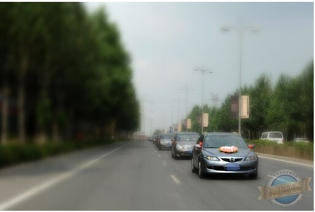
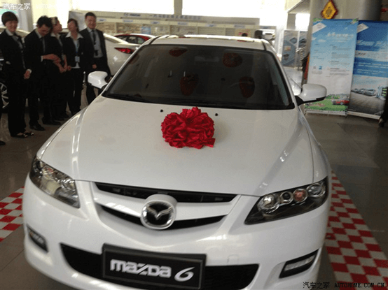

-
2002/10/1
2002年度最
佳设计奖(G-mark)
-
2003/04/12
Mazda6全国上市
-
2004/06/30
Mazda6 2.0L豪华
型全国上市,最终
定价21.88万元
-
2005/05/24
Mazda6荣获
"2005国产轿车
消费者满意度"第一
-
2006/06/23
Mazda6三年蝉联
"最佳中高级轿车"大奖
-
2006/09/19
马自达Wagon
全国上市
-
2007/07/08
Mazda6轿跑车
2.0L全国上市
-
2010/04/22
百度2010百度
汽车风云榜--长
盛不衰车型
-
2012/12/05
腾讯网-Mazda6
"最受关注经典车型"
-
2013/7/1
2013款马自达6劲耀上市
-
2014/04/02
Mazda6经典版
12.98万元上市
-
2015/03/09
2015款Mazda6上市
双横臂式独立前悬横向稳定杆，配合E型多连杆独立后悬架，让您昂然前行。
精致的金属拉丝风格式样，彰显人生质感。
90公里等速油耗AT车型6.0L，MT车型5.9L，燃油经济绿色环保。
在尖端科技的保证下，从时速100km到0km，Mazda6刹车距离仅为37米。
-
外后视镜电加热
-
精心调校的悬架系统
-
高质感中央控制台
-
更具燃油经济性
-
超越同级刹车距离
-
运动型前保险杠及前格栅
美丽的新娘
“时光荏苒岁月如梭~~~生命里无论喜与悲陪你一起见证每一天的“他or她”你还记得么？” 那 是2011年7月16日，我永生难忘的幸福日子，也是我的“小马”陪着我一起迎娶我家“美猴王”的日子！ （“美猴王”是我给老婆起的绰号，私下里我们互 相打趣时，我叫她“臭猴子”她叫我“二师弟” ） 而其中最难忘之一就应该属我们的婚礼头车了！
在这个问题上，我和老婆的意见非常统一：用我们自己的车！中国人的婚礼中一项很重要的事情 就是婚车，从过去 的八抬大轿，到现在的自行车、公交车、小汽车，婚车的演变过程俨然是一部中国近 现代史的发展历程。我平时对“小马”还算是关爱有加，所以无论是从相貌还是 性能我对“小马”还是 非常放心的，于是稍加装饰，开着我的小马顺利的迎娶了我的“美猴王”。在婚后的甜蜜生活中，小马 依旧任劳任怨的陪在我们的身旁，默默 的贡献着它的力量。
婚车
只要有它在，就会让我们感觉踏实，感觉温暖，感觉亲切，就好像我们的爱情，之前看到过有一 句话形容的特别好：“成熟的爱情像一件衬 衫：97%的棉、3%的莱卡。——体贴却不束缚，温暖却不灼 手，张弛有度，收放自如。”
嫁人啦
壮观吧
漂亮吗
作者：陈也罢
四年多前，在考驾照期间，我乘公司车出差时遭遇一起车祸，此后对车有了一种莫名的恐惧。勉 强考出驾照，却是连碰到方向盘都害怕。去年底，有一个卖车的朋友向我透露，杭州马上就要执行车辆 限牌政策，让我趁早入手一辆。听他的建议我去挑选了一辆黑色的2014时尚款马六。
提车那天朋友将车送到我家楼下。两天后我第一次坐进驾驶室。我一遍遍地背着记忆里的驾驶步 骤，一边开始点火发动引擎，感觉心脏都要跳出胸口了。车子徐徐启动，我轻踩油门、刹车、加减速、 流畅地转弯、熄火——似乎一切都在我的掌控中啊！原来我已经攻克了那曾经我以为永远也无法攻克的 恐惧症！随着时间的流逝，我深感马六真是非常靠谱：它从未出过一点哪怕是很小的故障。现在每天开 着心爱的马六上下班或者出差和旅游，我总是能保持充沛的精神和愉快的心情。
如今，我的马六已经安全行驶了近一万两千公里里程。我的马儿外观既大方又低调，既时尚又沉 稳；驾驶起来让人感觉人车合一，无限自由！
作者：布吉岛1992

这辆车我是从今年7月份的时候开始关注的，当时也是在网站上看到了阿特兹的广告，当时瞬间就被吸引住了，这么风骚的外形当时想想以为是跑车什么的，后来在网上查了下价格我真的就把持不住了，他就是我要的车呀！后来我在网上也看了很多人的提车帖，越看越喜欢，终于今年八月份跟着我哥去4s店去试驾了。那天是礼拜六，试驾的人还挺多的，我当时试驾的是2.0高配的，车上坐了4个人，试驾员一上来就是地板油，这酸爽，哈哈，然后是阿特兹的拿手绝活，高速过弯，不愧是“弯道王”，试驾完了我还是意犹未尽啊。
接下来就是坐下来跟销售谈价格的时候了，我看中的是2.0中蓝，销售说裸车价没有优惠18.8万，只能送油卡和工时券以及一些小礼品，最后21.5万成交。我是贷款买的首付12万，贷了7万，这样的话每个月还贷3000多点，感觉自己还是可以承受得起的。八月底把车订了，9月15号提的车，开心。
作者：生活在別处(M端)
很高兴能成为一汽马自达6的车主，我是13年一月份买的马自达6，马上就一年了。这一年有黑马的陪伴很舒心。给我的生活带来不少方便。
首次保养差不多5000公里的时候做的,换的4S店的矿物油,还有机滤,都是免费的;第二次保养在10000公里左右，当时加的钱换的4S店全合成的机油，开下来感觉比矿物质油好很多吗，油门响应速度也提升了，发动机声音也比原来好听。后续保养继续换全合成的。花费500不到，保养在同级车里面，算是很实惠的了
作者: GTO麻辣教师
说到约会，怎么能少我的“小情人”呢~不过此情人非彼情人，这个小情人是自家丫头。哈哈，别想歪了~当然更不能少了我的另外一个“小情人”马六了~ 继上次带丫头去了昆明海埂公园以后，计划每个星期带她出去走走；上个星期由于装修房子的事情，所以只带她去超市逛了下。作为父亲，一定要遵守诺言的 ，本周就计划带丫头去云南民族村。
对于自己来说，民族村已经有20多年没有去过了，原来小时候上学春游就会去，所以也当自己去重温一下。而且，媳妇还说怎么谈恋爱的时候不带我来啊！诶~现在工作在忙，还是多带家人出来采风吧！还能增强感情。下面直接上图，开始本次的作业。由于有几百张照片，从中选取了一部分，而且带着孩子，照片并不全面，希望各位车友多多谅解！本次踏春之恋，全部步行总共逛了五个小时，开始上图。
2006年6月初，我来到了本地的一汽马自达4S店，进店后我心里反倒有些犯怵了，因为当时这个4S店刚刚开业不久，马6又是新车，店里根本没货，别说试 驾车连个看的车都没有，只能看看资料图片、听听销售顾问的介绍。要买车只能提前预定，车什么时候到还是个未知数。在短暂的犹豫之后，凭着对马6的喜爱之情 和牵念之意，我最终还是决定买马6，6月10日，我交了定金购车，而且是全款定金！结果，麻烦的事来了，7月，车没来！8月，车没来！9月，车还没来！三 个月啊，全款订车，天天盼日日想，结果三个月了没见着车，我实在沉不住气了。那三个月里，我是隔三差五的往4S店打电话，只要有空就去博美看看，心里焦急 常常在电话里或在4S店里和工作人员争吵不休，几次弄得面红耳赤不欢而散。最后，终于在2006年10月开上了马6，三个月的等待啊，开着马6心里那份畅 快，那种如释重负的感觉，现在想想还觉得舒心。
六年来，我驾驶马6既跑过长途也跑过中短途，市内行驶更不必说，期间我最大的感触是马6的制动性能好。2007年我开车去天津办事，事情处理完后驾车 走高速往回返，当时还没有出河北境，高速路上车很少，同在行车道上我的前面有辆大货车，当时我的车速接近120，货车的速度慢我便变道超车，我刚到超车道 上要超车，突然前面的货车也开到了超车道上，前后相距不足百米，我赶紧踩刹车，急刹车！最后，速度降下来，离前面的货车只有三五米，激了我一身的冷汗。等 超过货车之后，我发现货车前面什么车都没有，他就是没来由的突然变道行驶，现在想想都后怕，要不是马6的制动性能好，恐怕就出事了。从那之后我开车也更加 小心，根据路面情况提前减速，而不是迫于紧急急刹车，要知道如果真的发生意外再去指靠车辆的安全性能，就是开着坦克也指靠不上。
六年来，马6已经融入了我的生活，成为我生活的一部分，家庭的一份子，将来要是换车，我还会选择一汽马自达！选择马6记得是2010年夏天，马自达4s店举办了几次试驾会，4s店的人很热情，和销售攀谈后，一拍即合，签下订单。马自达6运动的特点比较吸引我，因为自己非 常喜欢操作，享受驾驶乐趣。

等了一周，高高兴兴的把马自达6开回家。自从有了马6，生活中多了很多乐趣，厌倦了城市的喧嚣，周末喜欢和家里人去郊区走走， 自驾游成为新的一种生活方式。 走了很多地方，看了很多风景，这些都要归功马6，这里给马6做个宣传，真的很省油，北京这么堵车，平均油耗8个多吧，因为我自驾都是在郊区逛，测试过很多 次油耗，高速和郊区基本上百公里都是7个油左右，保养费用也不算贵。因为比较喜欢自驾，随意的照照风景，翻了翻硬盘，找了一些曾经的记忆与大家分享。
先从延庆自驾一日游来说起那些美好的生活。从北京城区出发，沿着G6进入山区，到了长城脚下，没有爬长城，八达岭人山人海的。我们决定驱车去爬残长城，游 玩的乐趣就在于走别人没走过的路，看不一样的风景，别有一番感受。每次马6带我自驾游，我都喜欢照照路上的风景，欣赏大自然的美丽。
正因为有了马6才有了 更多的生活乐趣。
作者：zsh216
一、第一次结识马六 大约在03年吧，回到母校，听同学说，某某老师买了辆马自达六，要近26万，啊，不得了，这老师真牛真有钱。目睹停在马路边上银灰色的马六，感觉好看极了，十分羡慕。
二、亲密接触马六 好象是09年吧，我到外地一好同学那玩，他有部2.0时尚马六。在游玩过程中，我时不时地开开，开这车真的感觉很好，操控顺手，转弯自如，在宽阔的大路上，加速有力。
三、想换车了 从去年开始，我一直有换车的念头。呵呵，当然，现在换20万左右车的米也够了。
四、选车之路 越野车我总觉得太大了，性价比不高，又特耗油。至于神车，我是不太感冒的。起亚K5、日产天赖、现代索八等都也看过，总觉得不是性价比不高，就是不是我喜欢的车型，可能还是马六情结的缘故吧。
五、订车提车 这些纠结问题解决后，我就决定购买马六了。当时选了紫檀色，车裸价145800元。从论坛上看到大家有关对车选什么颜色贴子的意见，我觉得我这人懒，选紫檀色不太合适，白色是膨胀色嘛，大气，时尚，不太显脏，所以就决定改为白色了。4月2号提车了，开车回来，感觉不错，马六还是那个马六，我心中的歌！
我的爱人、我的爱车
去年的5月20日，我终于将爱车马自达赢娶到家，很多的巧合，制造出很多的浪漫。就在那一天，5月20日，很特殊的日子，我和相恋多年的爱人结婚了。
那一天，我同时拥有了最心爱的女人，和最心爱的马六。心爱的女人是生命中最重要的一部分，爱车也一样。 女人需要修饰打扮，美容、首饰、时装，一样也不能少，爱车也是，座椅、音响、贴膜、防盗，加起来花费不菲，再加上平时的洗车、打腊，吊饰等等，随时都会诱惑我的腰包。但只要花在心爱之物上，再多也是心甘情愿。
在购车之前，我和爱人考虑了很久，最终决定买下这辆车。新婚燕尔，在与爱人以及爱车的蜜月中，我觉得自己是这个世界上最幸福的人。 甜蜜的蜜月，我和爱人一早开车去城东喝早茶，去城南吃午餐，晚饭去郊外兜风。伴随着心爱的马六，我们享受着降临的第一缕阳光，感受着落幕前的最后一丝温暖。当4个轮子代替我们的双脚跑完了这座城市的所有角落，我们感受到了幸福的甜蜜。 心爱的人、心爱的车，人生的旅途上，我们相伴相依。心爱的马六，此生注定与你人车合一，此生注定与你携程万里。

我可爱的女儿和马六
我原先开的是东风雪铁龙，开了几年后想换车了。最初考虑的是丰田凯美瑞。同级别的车我几乎都看过了，最后几乎都要提凯美瑞了，同事的一句推荐，使我对马六 的兴趣大增，在看过真车，以及详细了解之后，非常满意，价格也在我的考虑范围，对她就更中意了。就确定，我想要的就是马六… 选车当天，拉着老婆一起去4S店试驾。试驾了马六，一试驾感觉还不错，老婆说后排舒服大气，外观很适合我。我觉得提速过弯都不错。总的来说，马六是一辆内 外兼修的好车，很人性化，这点是很多车比不上的， 油门和制动线性感特别好, 给多少力,就有多少提速/刹车响应， 悬挂和避震的调教非常适合过弯,侧倾比大多数车型小, 给人以信心，马6节油性也很突出，在中高级车阵营中脱颖而出，甚至超过了一些1.6L的车型，马6“中级轿车节油王”的称号当之无愧。
闲暇时候与朋友一起吃饭、唱歌、旅游，生活变得丰富多彩起来。汽车带来的不仅是方便，它还改变了我每天两点一线的单调生活。 很多人说车是代步工具，对我来说不仅如此。车从最开始简单的代步工具渐渐成为改变我的生活态度的好伙伴。 相信很多车主都有这样的体会：有车的生活才是真正的生活。有了马六的陪伴我的生活变的更加自信从容。 我为自己选的人生路是条自由之路、快乐之路，选择了能为我带来安心和幸福的马六作为伴侣，我的路上因为有了她的陪伴，让自己的生活路可以自己做主，也因此 我的生活变的更加快乐和幸福！
在我心情不好的时候是我的倾诉对象
我的座驾
刚开始创业的时候真的很辛苦，还好有我的马六陪伴我一起度过了那些艰苦的岁月，记得有一次我出差去外地，晚上由于太累了，开着我的马六差点出了车祸，还好，我的马六性能很好，刹车很及时，我才有幸躲过了那场车祸，我的马六和我一起度过了那些风风雨雨的日子，每次出去和客户谈判，都很累，我只要一回到我的车里，我就觉得全身放松，心情不好的时候我的马六也是最愿意听我倾诉的对象. 虽然现在我的条件好了，但是我还是舍不得换掉我的座驾马六，我要他一直陪伴我，因为在那些最困难的日子是我的马六陪我身边和度过了那么多的磨难.
我的马六我的最爱，谢谢您那些年陪我一起走过的日子
几年前，事业才刚刚起步，没有经验，资金也不是很雄厚。什么事情都要亲力亲为，事无大小都要跟进，在短短的一个月内就瘦下来三十斤。女朋友很心疼我，于是 瞒着我先辞职然后来说来帮我，当时是不希望她这样为我牺牲的，但是她的坚持让我很感动。 因为业务需要往各地奔走，于是和女朋友商量在有限的资金里，挤出钱来配辆车吧，看了一个月的车，各种车的性价比我们都了如指掌了，最后下手买了台马自达 6，喜欢它的倒车雷达、新式轮辋和排气管镀铬装饰，还改善了内饰、增添了新的颜色，有效提高了产品的档次感，这样出去见客也不会失了面子。有些老板见了马 6也很喜欢，不停的追问性能和优点。 扎实的底盘，让我这个转弯一直转不好的人，在深夜左拐右转回家也能够应付自如，还真不亏是出了名的“弯道王子”。有一 次太累，转弯的时候脑子有点空白了，猛然发现弯道里有辆车正快速驶过来，马6的性能让我及时刹住了车，才没出事。事业在马6的承载下，虽然有点小波折，但 总的来说还算是一路顺风顺水，现在基本稳定下来。而我和女朋友也终于喜结连理并且有了一个很可爱的宝宝。 这些年，马六见证了我们为了事业而做出的努力，这其中的辛苦自不必说，每天深夜三四点回家是常有的，马六也见证了我们的执着爱情开花结果。
愿马六，继续裁着我的梦想我的爱，一路前行。
Mazda6见证我们的爱情
我们的爱
Mazda6一起见证了我们的爱情 从2011年底提车到现在，Mazda6陪伴我们走南闯北，从未出过状况。大学毕业实习的时候，单位刚好有同事有一台灰色Mazda6，性感的外形深深的 打动了我，从此对他的关注就没有停止过，表哥也在我的极力推荐下买了一台红色的Mazda6，去年年底自己也终于迎娶了属于我自己的小紫马，还选了一个非 常特别的车牌号A651（I LOVE YOU）。
媳妇当车模
刚提车时
A651是I love you
今年我们也即将步入婚姻的殿堂，小紫马也将作为我们的婚车，一起见证我们的爱情。
我们办公室三辆马六
我们办公室三个人三辆马六，听起来或许有点夸张，但这也从侧面反映了品牌认知度吧，呵呵。 我是一名自行车运动爱好者，经常到上海周边省市参加各种自行车比赛，有的车友可能会说把自行车折叠到后备箱不就行了吗？但是我的是公路自行车无法折叠的， 所以就用上了专门的装备--车顶架，这在国外已经非常普遍，可以大大拓展爱车的运输能力，除了可以安装我这种运输自行车的架子，还有车顶箱、滑雪板、行李 架……都可以安装，马6是国际车型，因此也厚道地预留了车顶架的安装孔，安装起来非常方便，我1个小时就安装完毕了！如果加装车尾架的话，还能再多挂三辆 自行车！
我周末最大的爱好，就是开着马六，驮着自行车，和朋友一起到郊外，好玩又环保。有时到外省市参加业余自行车比赛，我的改装红马六总是能驮着比赛用车安全快 速的到达目的地。
车尾架能挂三辆自行车
正面大PP
自行车业余比赛后留影
完美车顶架改装
作者：艺术人生201112
马自达 儿时的梦想
在人生的历程当中我总相信遇到什么人，碰到什么事，从事哪一行都好像是上天注定，回想起来都是因为一个字—缘。依稀记得我在读初中时看过一本体育杂志报道：美国NBA球星奥尼尔因驾驶一辆马自达RX-8的跑车超速受罚停赛！这本是一段颇具负面色彩的报道却给我留下深刻的印象。当时我只是特别觉得马自达这个名字特有意思，我的解读是：马可以自己到达，多么有意思啊！还有我就是觉得马自达一定很了不起，连这么有名气的大牌球星都开它，性能肯定很好！还超速可见是多么快的一辆车啊！当然脑海里也闪出瞬间的念头：我要能拥有一辆马自达是件多么幸福的事情！但仅仅是一瞬间的梦想！因为当时连电话都是稀罕物，有辆永久牌的自行车都已经让小伙伴们惊羡啦！至于小车那是不可能完成的梦想，太遥不可及啦！
马自达 激励我一路向前
记得读大学的那会，少年意气奋发，和同学一起谈论人生，理想，当然也会相互激励：那就是看谁先创业成功，想来好笑！成功的标志是：看谁先买传呼机，谁先买大哥大（那时不叫手机），小夏利也成为成功标志（毕竟拥有了私家车啊）。因为美术专业在当时还是很能赚钱的，广告行业才起步，我的很多同学都义无反顾的投身广告，若干年后都事业小成开上了宝马奔驰的。而我只是通过考核进入了当地的一家石化央企，图的就是安逸。事情往往就是这样，安逸过后就是消沉缺乏斗志，混日子过生活。看着身边的同学逐渐的发达买车，想想当年作为大学的高才生，想想那段充满激情的岁月，我的梦想重新点燃：为了儿时的梦想，为了我心中的马自达，我必须一路向前。我开始利用自己的专业优势开办了一家小型美术培训机构，培养了大批优秀的美术专业人才，既获得了社会的认同，也让自己的儿时梦想—马自达汽车梦梦想成真！
我儿时的梦想—马自达也是我一路向前的动力我的油画作品（金色的长城）。也希望一汽马自达能像中国长城成为人类的奇迹！
为了让我的小红马舒舒服服,这是我特意为它安置的小马槽,还可以吧!写了这么多,希望大赛的评委能多多提携,给我弄个红色的车模,我又可以在儿子面前炫耀炫耀,又可以增加点我在儿子心目中的分量!也希望坛子里的朋友多多捧场,先谢谢咯!（最好能前往马窝参观参观！呵呵呵呵！那就真的太有缘啦！）
-
“小马”陪我一起迎娶“美猴王”
-
爱马六，很多理由！
-
常州蓝色生死恋2.0豪华
-
很高兴能成为一汽马自达6的车
-
开着马六去云南民族村
-
马6，一见钟情的邂逅！
-
马儿带我自驾游
-
马六我心中的歌----新人新贴新马六
-
马六相伴，有爱相随
-
漫漫人生路 有你更幸福
-
那些年，和我的马六一起打天下
-
那些年，马六载着我的梦想我的爱一路前行
-
那些年我们一起开的Mazda6
-
我的改装红马六
-
因为缘 让你我牵手